Ear Olympics
Ear Olympics is an ear-training arcade for the M-VAVE FM-1. A cat called Meow plays you a tune, and you play it back. It has two games, Copycat (relative pitch, 34 levels) and Simon (follow the lights). Wrong answers play the right one, and levels rise by themselves as you get things right.
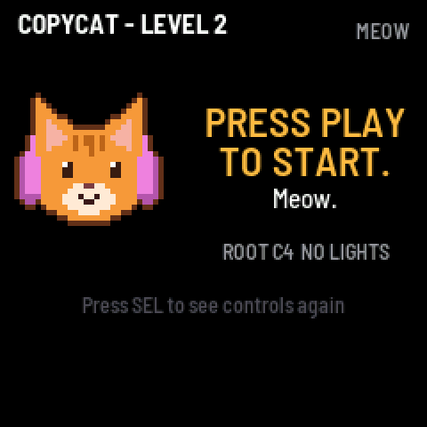
1Trying it
For now Ear Olympics runs in your browser. Open the emulator: it runs the same code as the FM-1, with sound, and you can play it with a mouse, a touch screen or your computer keyboard. Click the panel once, and the shortcuts listed under the controls work. "MIDI ports" lets a MIDI keyboard play it too. Installing on a real FM-1 isn't open yet.
2Starting up
Every start, the cat introduces itself, then explains the controls over three screens. Any key goes to the next screen. HOME skips straight to the game.
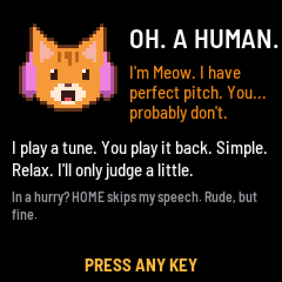
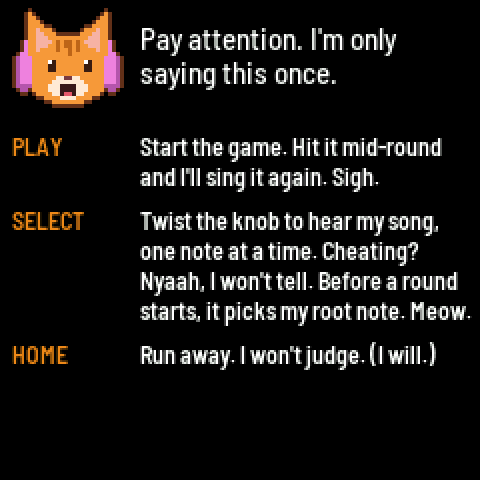
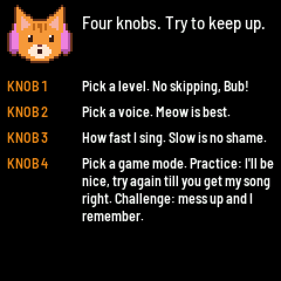
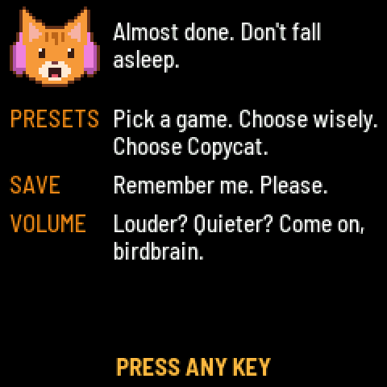
On the ready screen, PLAY starts. To see the controls again, press SEL. The top line says the game and the level. Under the cat, a small line shows the root and the lights, and PRACTICE or the speed when they aren't the default.
3Playing Copycat
A round has three parts.
- Root. The cat plays the root note alone, and its key lights. A soft drone keeps it sounding under the melody.
- Listen. The cat dances while the melody plays, once. On the early levels the notes show as dashes, high or low, so you can see the shape.
- Your turn. Play the melody back, starting from the first note. The timer doesn't exist: think as long as you like.
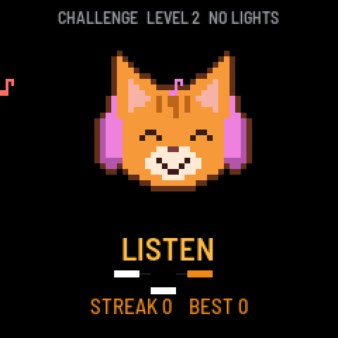

During your turn:
- PLAY plays the root and the melody again, from the start.
- Turn the SELECT knob to hear the melody one note at a time, forward or back. A note still sounding is cut off first, so they never overlap.
- The keys stay at C4 and above, because the FM-1's speaker is small and a low note is weak.
When you get the last note right, the screen says NICE!, WOW!, SWEET!, AMAZING! or YUP, and the cat cheers. When you get a note wrong, the cat yowls, the screen says MISS, UMM..., WHOOPS., HISSS!, WRONG!, NYAAAHH! or INCORRECT, and then you hear the right melody over its root. With the lights off, the keyboard slides in with the right notes lit.
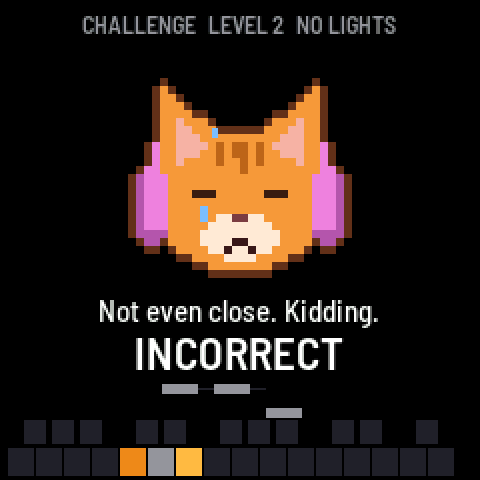
After three misses in a row, the cat starts giving advice: press PLAY first, use the SELECT knob, slow it down with knob 3, try Practice mode, think before you act, sing the notes first.
4The controls
| Control | What it does |
|---|---|
| Keys | Play the notes back. The FM-1's keys light the root and the level's notes. |
| PLAY | Start. During your turn, play the melody again. On the GOOD JOB card, go on. |
| SEL | On the ready screen, show the controls again. |
| HOME | Stop the game and go back to ready. On the cat's talking screens, skip to the game. |
| SELECT knob | Before a round, choose the root, C4 to G4. During your turn, step through the melody a note at a time. |
| PRESETS knob | Choose the game: Copycat (the default) or Simon. Only while ready. |
| KNOB 1 | Choose the level. Levels are locked, see below. Only while ready. |
| KNOB 2 | Choose the voice of the notes: MEOW (the default), WARM, BELL, E-PIANO, TRIANGLE or SQUARE. Any time. |
| KNOB 3 | Speed: 25% to 200%, in steps of 5%. Any time. |
| KNOB 4 | Mode: CHALLENGE or PRACTICE. Any time. |
| SAVE | Keep your settings, levels and best scores now. |
| VOLUME | The master volume. It shows on the screen for a moment. |
Challenge is the game: a miss costs you progress. Practice lets you keep trying the same melody until you get it right, and nothing counts: no streak, no progress, no best. After three wrong tries at a no-lights melody, the cat says "Sssss... let me hit the lights for you." and replays it lit.
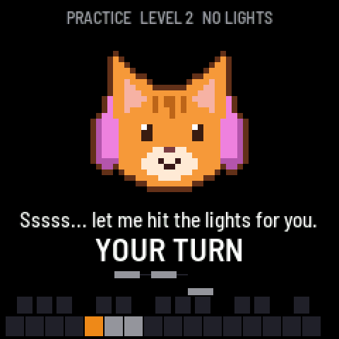
5Levels
Copycat has 34 levels. Each adds one new idea: steps (do re mi), then fa and sol, la, ti and the octave, semitones, leaps, the drone taken away, notes below the root, a root that moves, chromatic notes, and a boss level at 34. When a new pitch arrives, the lights come back for one level and every melody uses the new pitch. The next level has the same notes with the lights off.
You move up by playing enough melodies right at a level: 8 at levels 1 to 9, 10 at levels 10 to 20, and 12 after that. They needn't be in a row, but a miss takes a quarter of the rounds off your count, so guessing can't get you through. Every new level has a card saying what's new.
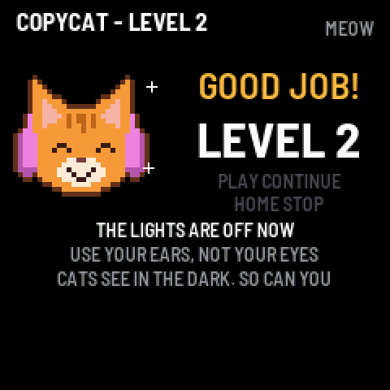
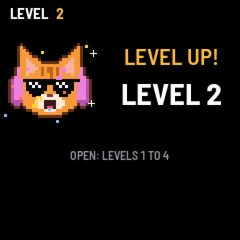
Levels are locked: you can play up to three levels above the highest you've completed. Knob 1 past that tells you what to finish first.
From level 29 the root changes every round, round the cycle of fifths. Only its key is lit. The screen doesn't name it, since this is relative pitch.
6The cat's moods
Meow dances while the melody plays, sings along while you play, cheers when you're right, droops when you miss, and celebrates a level up in sunglasses, with a song and a purr. The success sound is always the cat. A miss is the cat's sad yowl. The MEOW voice hardly bends the pitch, so you have to copy it.
Keep a run going and the cat comments: "Purrfect." every third, "Okay. Impressive." every sixth, and every ninth, "Are you cheating?"
7Simon
Press PRESETS to choose Simon. A sequence plays, lit as it sounds, and you play it back. Each round adds one note, and a wrong note ends the game. Your score is the longest sequence you got right. There's no root, because there's nothing to establish, and it speeds up as the sequence grows.
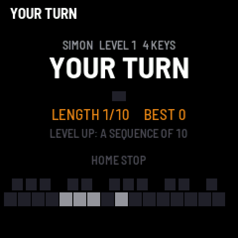
The levels set how many keys are in play: 4, 5, 8 (the major scale) and 13 (every key of the octave). A sequence of ten moves you up a level.
8Saving
SAVE keeps the game, the root, your levels and best scores. HOME keeps them too, and so does a streak ending, a game ending, or moving up a level. Nothing is written to the FM-1's flash between rounds.
9Troubleshooting
| Problem | What to do |
|---|---|
| The notes are hard to hear | Turn the volume up, or change the voice with knob 2. The FM-1's speaker is small, so headphones help. |
| A level is locked | Finish more levels first. You can play up to three above the highest you've completed. |
| It's too hard | Turn knob 3 to slow the melody down, or knob 4 to Practice. There's no shame in either. |